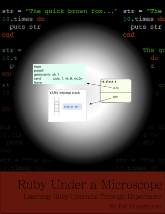
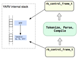

YARV Maniacs 【第 11 回】 最近の YARV の事情
書いた人：ささだ
はじめに
YARV: Yet Another RubyVM を解説するこの連載。お久しぶりです。前回が 2011 年 04 月に更新されているようなので、2 年ぶり、ということになります。また、随分間が空いてしまいました。間が空いている間に、Ruby 2.0.0 がリリースされていたり、mruby がリリースされたりと世の中は随分と変わってしまいました。
YARV はどうかと言いますと、Ruby 2.0.0 でも利用されています。Ruby 2.0.0 にあたって、少し高速化しました。が、メジャーなところはあまり変わっていません。
ただ、mruby が盛り上がってきており、今後は mruby の処理系を CRuby/MRI として利用しよう、みたいな話が出てくるかもしれません。また、Python を高速化することを目的として開発されている PyPy プロジェクトのツールチェインを利用した Ruby 実装である Topaz がリリースされました。ベンチマークでは CRuby の 5 倍くらい速いそうで、凄いですね。YARV が 1.8 系の CRuby/MRI に取って代ったように、次の Ruby では YARV をこういうのに換えようって話もあるかもしれません。JRuby も相変わらず元気で、ますます人気を博しています。そんな感じで色々出てきています。負けてられません。
今回は、そういう流れとはまったく関係無く、最近の YARV 事情をご紹介します。といっても、沢山書いてご紹介しよう、というわけではなく、YARV を紹介した記事を紹介しよう、という感じで、つまり、YARV Maniacs 【第 1 回】 『Ruby ソースコード完全解説』不完全解説 と同じようなことをやって 1 つ記事をでっち上げよう、というものです。
今回ご紹介するのは、Ruby 1.9 の処理系の中身を概観する Ruby Under a Microscope (英語) と、ささだが 2012 年の年末にまとめました Ruby VM アドベントカレンダー (日本語) になります。
Ruby Under a Microscope

Ruby Under a Microscope は、Pat Shaughnessy さんによってまとめられた、Ruby 処理系がなぜ動くのか、を解き明かす電子書籍です。英語で書かれていますが、英文は比較的平易であり、日本人にも読みやすいと思います1。20 USD なので、円安になっている昨今ですが、そんなに高くないので買うといいと思います。オススメです。
冒頭で「My approach in this book: theory and experiment」と、本書のアプローチが理論と実験であることが紹介されています。まず、ソースコードを読んで理論を立て、そして実際に動かして確認する、という手順を踏んでいます。この理論の部分はわかりやすい図で紹介されており、簡単に概要を把握することができるでしょう。
RHG では C 言語で書かれた Ruby 本体のソースコード 1 行 1 行を丁寧に解説していくスタイルでしたが、こちらはソースコードはほとんど出てきません。筆者は冒頭で「RHG は C プログラマための本であるが、この Ruby Under a Microscope は Ruby プログラマが Ruby に関する理解を深めるための本である」と紹介しています2。実際に、C の知識は必要無い、と言い切っています。凄いですね。ちなみに、内容はいくつかのトピックに限定されており、Ruby 処理系のすべてが解説されているわけではありません。
Ruby Under a Microscope を読んで Ruby 処理系の理解を深めることで、読者は次のような利点が得られるよ、と紹介しています。
- より良い Ruby プログラマになることができる
- コンピュータサイエンスに関する理解を深めることが出来る
- 楽しい！
あと、JRuby、Rubinius ではどうなっているか、という点も書いてあります。1 実装だけではないのでとても親切に思います。
なんと、この本は、Pat さんが 6 ヶ月休職して書き上げたそうです。凄いですね。
以降は、Ruby Under a Microscope の各章を紹介し、本書の内容を概観しようと思います。
1. Tokenization, Parsing and Compilation
- Tokens: the words that make up the Ruby language
- Parsing: how Ruby understands the code you write
- Compilation: how Ruby translates your code into a new language
- Tokenization, parsing and compilation in JRuby
- Tokenization, parsing and compilation in Rubinius
パーサに関する内容が書いてあります。
2. How Ruby Executes Your Code

- YARV’s internal stack and your Ruby stack
- Local and dynamic access of Ruby variables
- How YARV controls your program’s execution flow
- How JRuby executes your code
- How Rubinius executes your code
主に VM の実行について書いてあります。 いやー、YARV ってこうやって動いてるんですねえ。 ちなみに、1.9 ベースであり、2.0 の構造とはちょっと違います。
3. Objects, Classes and Modules
- What’s inside a Ruby object?
- Deducing what’s inside the RClass structure
- How Ruby implements modules and method lookup
- Objects, classes and modules in JRuby
- Objects, classes and modules in Rubinius
オブジェクトの表現と、クラスやモジュールの表現について書いてあります。
4. Hash Tables
- Hash tables in Ruby
- How hash tables expand to accommodate more values
- How Ruby implements hash functions
- Hash tables in JRuby
- Hash tables in Rubinius
ハッシュテーブル (Hash) について書いてあります。 3 章の内容もそうですが、RHG だとまず最初にこの辺のデータ表現の話をするんですよね。ソースコードを読むためにはこれらの知識が必要になるからだと思いますが、RHG と本書の性格の違いがわかって面白いですよね。
5. How Ruby borrowed a decades old idea from Lisp
- Blocks: Closures in Ruby
- Lambdas and Procs: treating functions as a first class citizen
- Metaprogramming and closures: eval, instance_eval and binding
- Closures in JRuby
- Closures in Rubinius
クロージャ (Ruby の Proc) について語る章ですが、いきなり Lisp の歴史から始まっていて驚きます。
Ruby VM アドベントカレンダー
今回もう 1 つ紹介したいのは 2012 年の年末に書かれた Ruby VM アドベントカレンダーです。書いたのは笹田耕一、つまり私です。アドベントカレンダーというよりは、単に日記のエントリー集です。
下記に全記事へのリンクを示します。
- #1 RubyVM::InstructionSequence の拡張
- #2 Kernel#caller_locations の紹介
- #3 Kernel#caller_locations の性能
- #4 vm_backtrace.c
- #5 メソッドディスパッチの高速化 (RubyConf 2012 の紹介)
- #6 Thread.async_interrupt_timing の紹介
- #7 Thread.async_interrupt_timing の #6 の話の訂正
- #8 ObjectSpace.reachable_objects_from() の紹介
- #9 ObjectSpace::InternalObjectWrapper の紹介
- #10 Flonum の紹介
- #11 Flonum の実装
- #12 TracePoint の紹介 (1)
- #13 TracePoint の紹介 (2)
- #14 TracePoint の紹介 (3)
- #15 TracePoint C API の紹介
- #16 TracePoint の実装
- #17 DTrace の紹介
- #18 DebugInspector API
- #19 Module#prepend の紹介
- #20 Module#prepend の応用
- #21 VM のスタックサイズチューニング
- #22 VM のメソッドディスパッチの高速化 (1)
- #23 VM のメソッドディスパッチの高速化 (2)
- #24 VM のメソッドディスパッチの高速化 (3)
- #25 Ruby 2.0.0 でやり残したこと
主に、Ruby 2.0.0 で VM に関係が深そうなところ、というか私が弄ったところをまとめたものです。Ruby VM と題したので、もうちょっと一般的な話を書こうかと思ったのですが、新機能紹介が多いものになってしまいました。
内容を分類すると次のような感じです。
- 性能まわり
- バックトレースまわり
- スレッドまわり
- メモリ管理まわり
- デバッグサポートまわり
- Module#prepend まわり
- まとめ
一部、記事が忘却の彼方に忘れ去られているところもあり残念ですが、なるべく例を多めに作ったつもりですので、よかったら参考にして下さい。デバッグサポートまわりは、まだどこにも書かれていないんじゃないかな。
まとめ
というわけで久しぶりの YARV Maniacs、今回は (今回も) 人の文献を紹介するという技で終わらせました。でも、それぞれ、力の入った資料 (とくに、Ruby Under a Microscope) なので、とっても参考になるんじゃないかと思います。
次はまた 2 年後だったりするんでしょうか。お楽しみに。
著者について
ささだこういち。Heroku, Inc. に転職しました。CRuby/MRI の開発者として雇われています。本当に CRuby/MRI の開発しかやっていないです。通称、フルタイムコミッタです。ありがたい話です。あ、時々 @ayumin に命令されて雑用をやってます。まぁ、いいか。